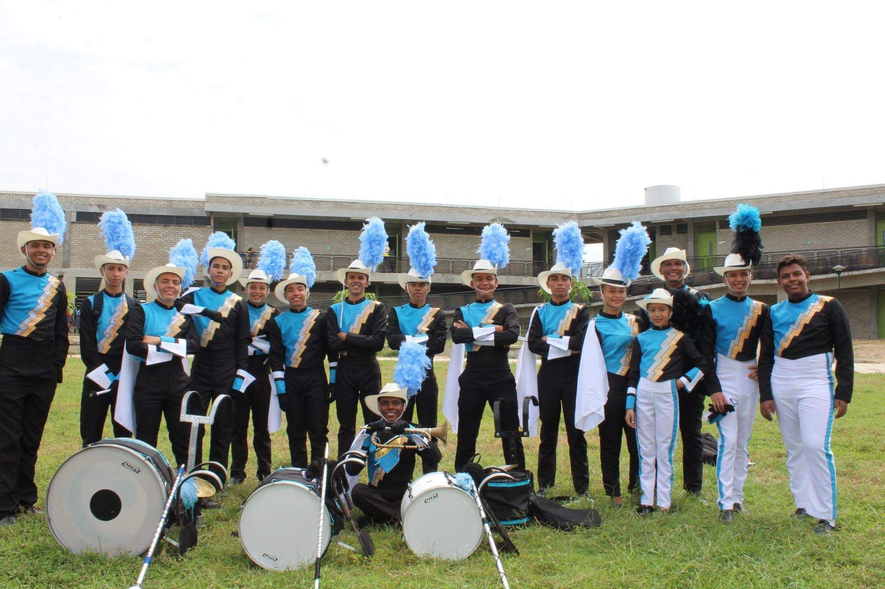
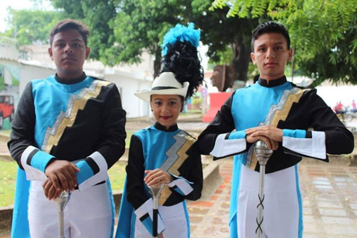
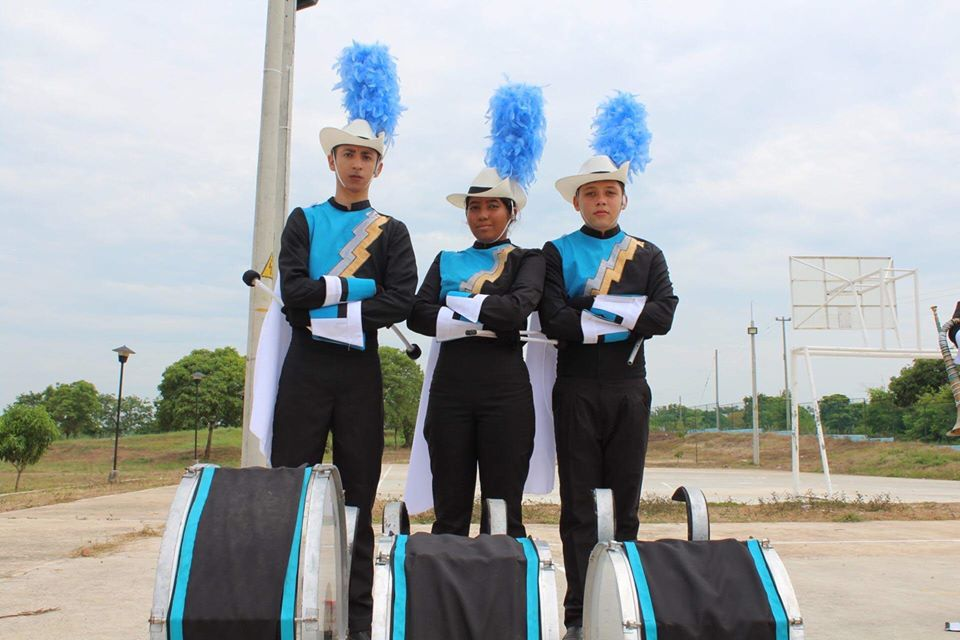

- 
- 
- 
Somos un grupo musical que ha nacido a causa de los distintos problemas que afectan el desarrollo
socio-cultural de nuestros jóvenes, los cuales se enfrentan a diario a las distintas situaciones
adversas como: pandillismo, drogadicción, prostitución y delincuencia. Siendo estos los principales
factores negativos con mayor porcentaje que azota a Magangué, con base en lo anterior hemos decidido
hacer parte de la solución creando un grupo musical que tiene como objetivo influir de forma
positiva en los niños, niñas y jóvenes, mediante la música, implementando estrategias que
desarrollen la inteligencia emocional, teniendo en cuenta que esta nos permite desarrollar
habilidades que ayuden en la vida productiva en sociedad, esto se lograra a través de talleres u
otras estrategias que contribuirán a la activación de la misma.
Teniendo encueta lo dicho se plasma y organiza la creación de una banda de marcha basada en los
conceptos musicales básicos y las normas propias de un proceso de formación musical; con nuestra
actitud emprendedora, luchadora, amante del arte y la cultura. Queremos generará una posible
solución y hallar el camino asía el progreso de nuestro municipio.
Poder formar personas íntegras, con valores, brindándoles la posibilidad de ser diferentes, proyectándolos a tener una mejor manera de vivir y de esa manera contribuyendo positivamente a la comunidad Magangueleña generando un cambio en el desarrollo socio-cultural.
Para el 2023 queremos ser una fundación musical que sea reconocida a nivel nacional como generadora de cambio creando a personas con valores y productivas para el desarrollo sostenible de esta sociedad.